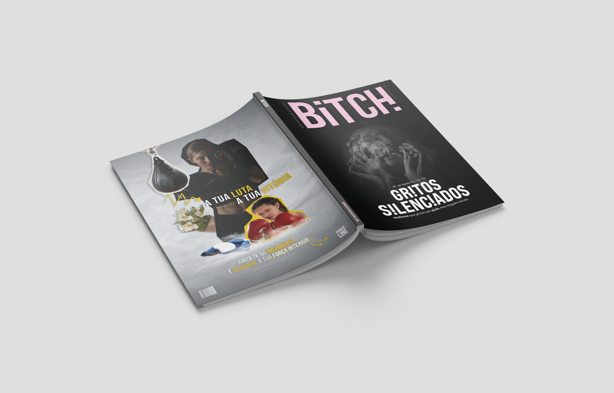
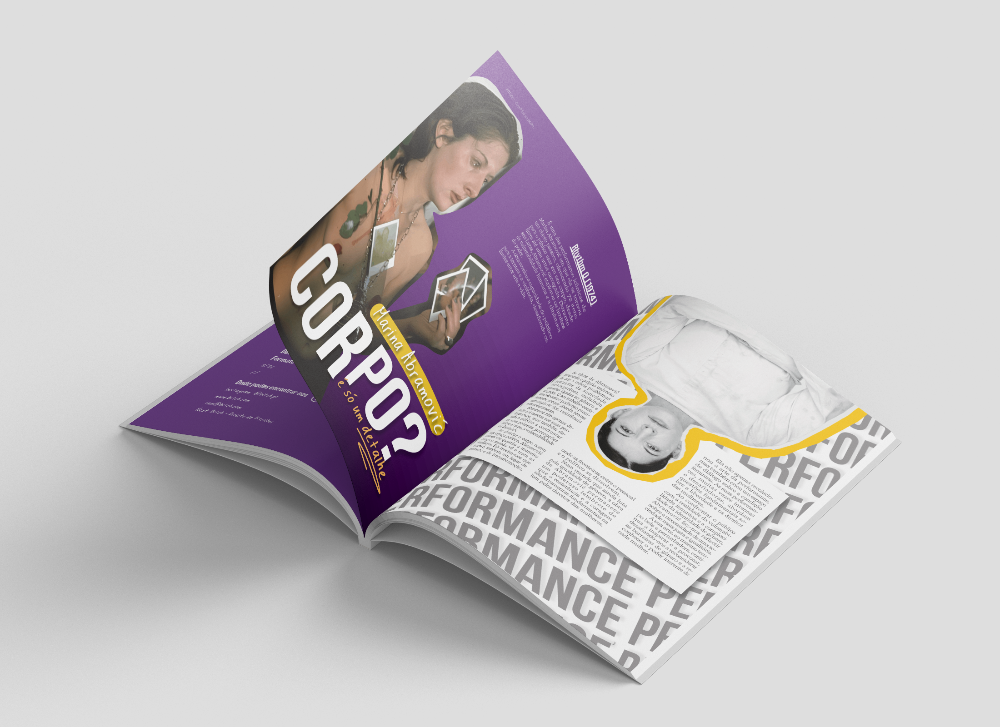
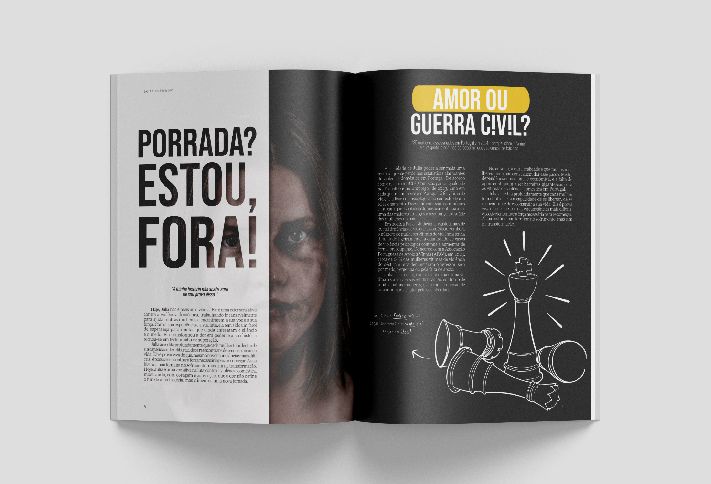

BITCH!
Uma publicação editorial de carácter provocador, irreverente e assumidamente feminino.
BITCH! explora o design editorial como espaço de expressão, cruzando conteúdo, tipografia e imagem através de uma linguagem visual expressiva e intencionalmente disruptiva.
A identidade da publicação procura refletir essa atitude ao longo da capa e do miolo, recorrendo a contrastes fortes, diferentes escalas tipográficas e composições que variam entre estrutura e experimentação.
- Design Editorial
- Direção de Arte
- Identidade Visual
- Tipografia


Uma linguagem visual
sem pedir licença.
A composição editorial alterna momentos mais estruturados com páginas visualmente mais intensas, permitindo que texto, imagem e tipografia participem ativamente na personalidade da publicação.

Mais do que organizar conteúdos, o projeto procura utilizar o próprio ritmo das páginas como elemento narrativo. Alterações de escala, contraste e densidade permitem criar diferentes intensidades ao longo da publicação.